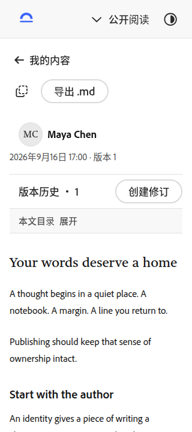
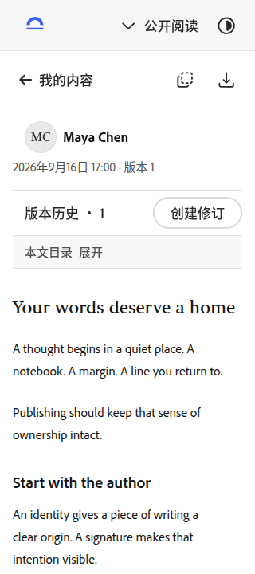
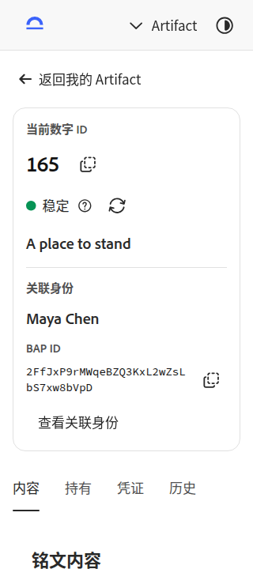
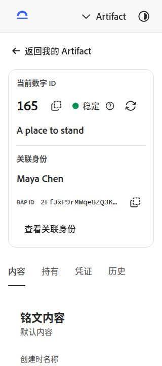
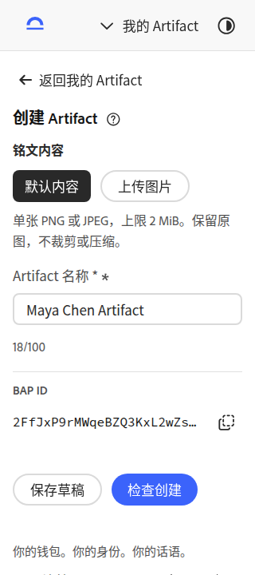
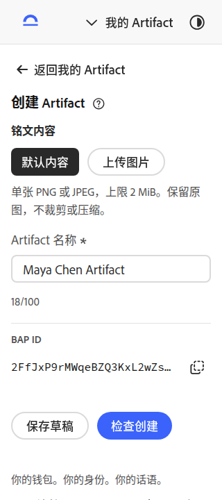
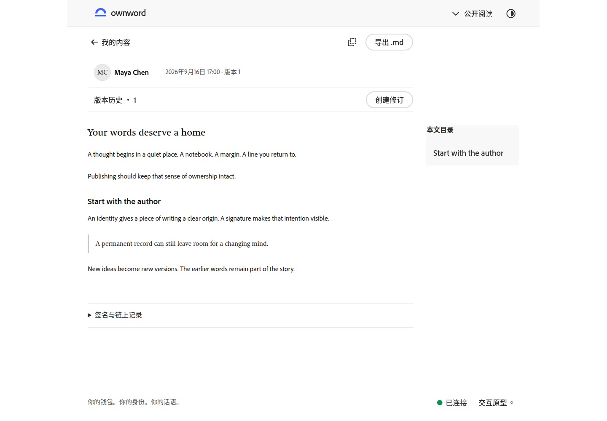
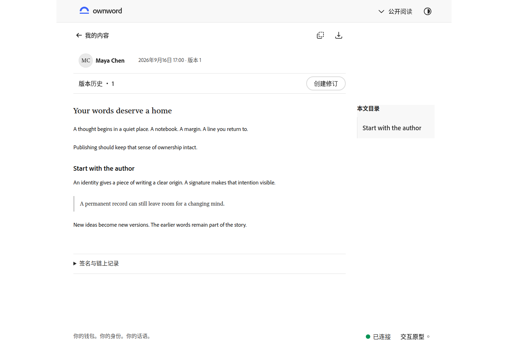
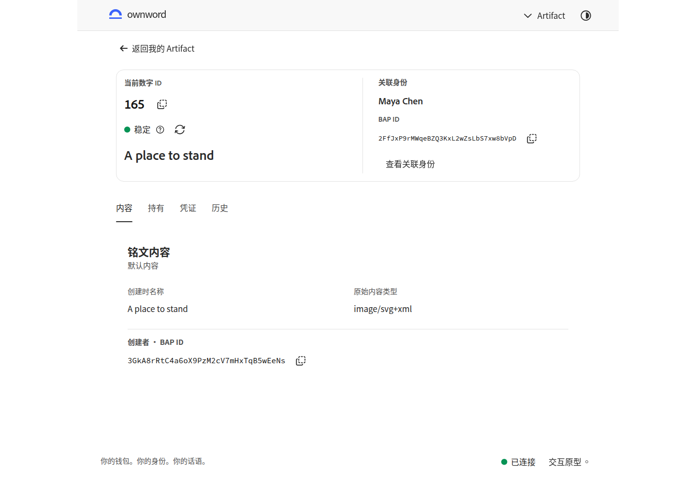
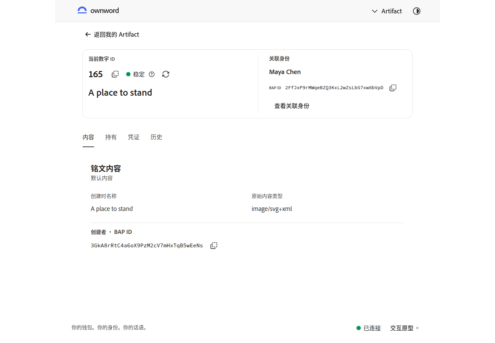

收紧操作，让内容更早出现
本轮聚焦阅读工具栏、Artifact 详情与必填标记。前后使用相同数据、状态、语言和视口，等待字体就绪后截图；点击图片可查看原尺寸。
打开交互原型 · 上一轮：筛选与手机列表 · 身份与作品层级 · 待视觉复核
手机 · 公开阅读
返回、复制和导出合为一行；导出使用官方图标按钮，悬浮与键盘聚焦可查看名称，正文更早进入视线。


手机 · Artifact 详情
稳定短编号、复制和状态同行；关联身份复用紧凑标识，长值仍可完整复制，失败时展开手动复制。


手机 · 创建 Artifact
移除名称文案中的手写星号，由官方输入框统一提供必填标记、错误提示和无障碍语义。


桌面 · 公开阅读
复制和导出采用一致的次级图标操作，作者、版本与正文保持原有阅读次序。


桌面 · Artifact 详情
编号与状态同组，关联身份更紧凑；内容、持有、凭证与历史继续使用官方 Tabs。

